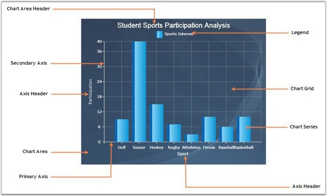

The Chart has various elements such as Area, Axis, Series and Legends and so on. The following image highlights the elements of the chart control.

Figure 8 : Chart Elements
Elements of Chart Control
A brief description of the chart control is given below:
Series
The chart data points are represented in a series, based on the selected chart type.
Area
This is the section that holds Axes, Legends, Header and Series.
Primary and Secondary Axes
The Axes is the rectangular coordinate system against which the points are plotted.
Axis Header
Represents the title text of Axis.
Legend
The Legend is used to display information about each series. Chart legend can be used to set the visibility of the series, using the check boxes.